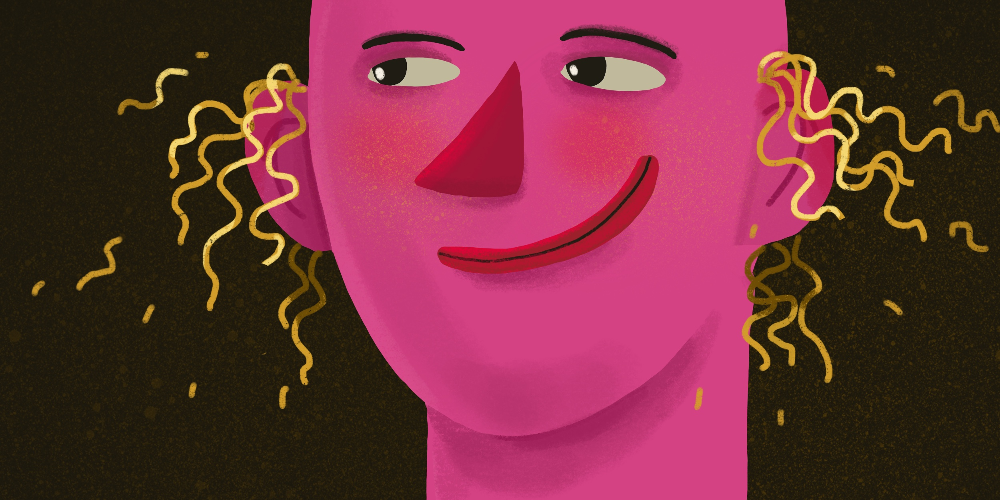
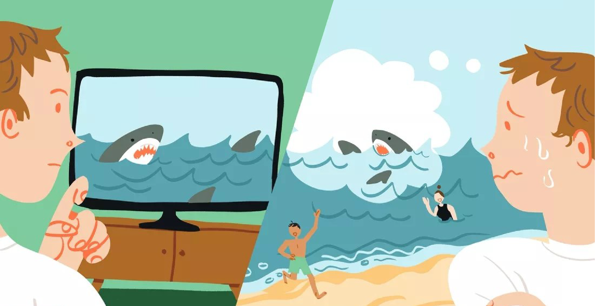

Когнитивные искажения
Что же такое когнитивные искажения? Впервые термин «когнитивные искажения» был введен в 1972 году известным когнитивистом Амосом Тверски и психологом Даниэлем Канеманом. Этим страшным словосочетанием называют распространенные и систематические ошибки мышления, которые мы все регулярно совершаем.
Это не просто незнание логических законов и принципов критического мышления, а своеобразные систематические отклонения в поведении, восприятии и мышлении. Обусловлены они стереотипами и предубеждениями, социальными и эмоциональными причинами и даже сбоями в обработке и анализе информации.
Эффект иллюзии правды
Удивительно, но мы считаем более правдивой ту информацию, которую слышали много раз. Именно это обстоятельство и лежит в основе следующего когнитивного искажения под названием «эффект иллюзии правды».
Эффект иллюзии правды был выявлен в 1977 году в Университете Вилланова и Темпльском университете. В ходе исследования участникам сообщали 60 фактов, которые выглядели вполне вероятными, например: «Первая военная авиабаза была создана в Нью-Мексико» или «Баскетбол стал олимпийским видом спорта в 1925 году». Испытуемым предлагалось оценить по шкале от 1 до 7, насколько правдивыми им кажутся данные суждения. Через какое-то время участников вновь собирали и повторяли им эти факты наряду с другими, новыми. Чем больше раз людей собирали и чем чаще они слышали те же факты, тем сильнее повышалась оценка их правдивости у тех же участников. Испытуемые чаще всего не помнили, что эти факты им уже назывались в ходе эксперимента, но почему-то были точно уверены, что где-то о них слышали. А если где-то слышали, значит, это похоже на правду. Когда наш мозг сталкивается с уже знакомой информацией, он начинает быстрее реагировать на нее и неправильно воспринимает это как признак ее истинности. Мы склонны использовать кратчайшие пути для оценки правдоподобности.
Эвристика доступности
Я задам несколько странных вопросов. От чего погибает больше людей: от убийств или самоубийств? Вы удивитесь, но самоубийств совершается чуть ли не в два раза больше. Как вы считаете, что опаснее для жизни: кокосовый орех или акула? Не торопитесь отвечать, подумайте. На самом деле, как ни странно, опаснее кокосовые орехи: от их падения с дерева умирает больше людей, чем от зубов страшной акулы. Автомобиль или самолет? Мало припомню людей, которые боятся ездить на машине, а вот знатных аэрофобов у меня среди знакомых полным-полно. Однако даже велосипед болееопасный вид транспорта, чем современный самолет.
Почему же мы боимся совсем не того, чего в действительности стоит опасаться? Ответ на этот вопрос мы получим, рассмотрев следующее когнитивное искажение.
Эвристика доступности — когнитивное искажение, основанное на легкости вспоминания и представления тех или иных событий. Это склонность человека судить о вероятности чего-либо, опираясь на легкость нахождения примеров-подтверждений. Человек считает более вероятным и распространенным именно то, что ему легче и проще вспомнить или представить
Как влияет эвристика доступности на нашу жизнь? Мы даем завышенную оценку вероятности тех событий, которые легко представить. На наш взгляд, то, что мы легко себе представляем, на самом деле существует, а то, что не можем представить, не существует. Например, мы судим о вероятности заболевания той или иной болезнью на основании того, сколько подобных случаев произошло вокруг нас, с нашими знакомыми и близкими. Если среди наших знакомых нет людей, умерших от рака легких, мы продолжаем курить, считая, что никакого риска нет. Если на работе уволили несколько человек, нам, конечно, начинает казаться, что уволят и нас, но мало того — мы предполагаем, что вокруг происходит настоящая катастрофа: во всех фирмах всех повально увольняют. Увидев несколько выпусков новостей об авиакатастрофах, мы ошибочно начинаем считать, что самолет — это самый опасный вид транспорта, и каждый полет превращается в кошмар. Узнав, что Билл Гейтс и Стив Джобс сделали блестящую карьеру и изменили мир, не имея высшего образования, многие рассуждают так: чтобы стать миллиардером, учиться не нужно, успех и так придет. Но много ли в реальности таких «необразованных» миллиардеров?
Pефлекс Земмельвейса
Для начала немного истории. До середины XIX века в акушерских клиниках Европы была невероятно высокая смертность.Многие даже предпочитали рожать дома, лишь бы не попасть в больницу. Удивительным был и тот факт, что женщины, рожавшие дома, на улицах или в поездах, почти никогда не подхватывали родильную горячку.
В 1847 году венский врач-акушер Игнац Земмельвейс нашел способ борьбы с родильной горячкой. Он обратил внимание, что смертность рожениц в 1-й акушерской клинике, предназначенной для практических занятий врачей и студентов, была гораздо выше, чем во 2-й клинике, где обучались акушерки. Но в отличие от акушерок врачи 1-й клиники занимались еще и препарированием трупов. Врачи были аккуратными, тщательно мыли руки с мылом, но понятия стерильности не было. Земмельвейс предложил врачам не просто мыть руки водой и мылом, а дезинфицировать их хлорной водой, чтобы полностью избавиться от трупного яда. Однако большинству коллег Земмельвейса эта идея показалась бредовой, и 29-летнего врача из Вены подняли на смех — хотя идею проверяли в нескольких клиниках, и да, это действительно работало! Но эмпирические доказательства эффективности стерилизации рук почему-то врачей не убеждали. Более того, директор клиники запретил Земмельвейсу публиковать статистику уменьшения смертности.
Заслуги Земмельвейса были признаны венгерским Королевским обществом врачей лишь через 37 лет после того, как он сделал свое открытие. Использование этого нехитрого асептического приема изменило медицинский мир раз и навсегда. Позже в Будапеште на пожертвования врачей всего мира был установлен памятник Земмельвейсу, на котором было написано: «Спасителю матерей».
«Pефлекс Земмельвейса» - это неспособность человека принять новые факты, если они противоречат его устоявшемуся мнению, убеждениям, нормам или привычным парадигмам. Казалось бы, ученые постоянно должны сомневаться в своих теориях, проверять и перепроверять их, быть готовы изменить свое мнение и с легкостью отказаться от прежних взглядов, если новые доказанные данные вступают в противоречие со старыми. Но в действительности, как показывает история, это совсем не так.
Но ведь не только в науке, но и в любой другой сфере мы сталкиваемся с ситуациями неприятия всего нового. Любое устоявшееся представление с трудом претерпевает изменения в нашем сознании: новое встречается в штыки.
Эффект "сложно - легко"
Эффект "сложно - легко" заключается в том, что наши прогнозы относительно вероятности решения той или иной задачи часто не соответствуют степени ее сложности. Мы переоцениваем свои силы при решении трудных задач и, наоборот, недооцениваем себя в работе над простыми. Впервые об этом феномене написали американские психологи Сара Лихтенштейн, Пол Словик и Барух Фишхофф в 1977 году.
Действительно, мы порой грешим излишней самоуверенностью или, напротив, недооценкой своих возможностей. «Начать заниматься спортом? О, это не про меня. Это сила воли нужна какая! У меня не получится!» Однако выделить 15–20 минут в день на элементарную зарядку или 40–60 минут на прогулку может каждый — надо ведь с чего-то начинать. И наоборот: «Стать актером? Да легко! Вот поступлю в театральный, окончу его и стану в лучших фильмах сниматься. Награды еще возьму какие-нибудь!»
Для объективной оценки вероятности решения проблемы недостаточно знать все ее нюансы, нужно обладать адекватным уровнем самооценки и самопознания. Но мы нередко чересчур уверены в себе там, где нужно быть скромнее, и слишком скромны там, где нужно быть увереннее. И это когнитивное искажение, к сожалению, распространено очень широко
Конфабуляция
Чтобы рассмотреть следующее когнитивное искажение, предлагаю вам для начала пройти тест. Отвечайте, ориентируясь только на себя.
- Когда умер Нельсон Мандела?
- В 1987 году.
- В 2013 году
- Что сказал Борис Ельцин в своем прощальном обращении?
- «Я устал. Я ухожу.»
- «Я ухожу.»
- Какая фраза написана на гербе СССР?
- «Пролетарии всех стран, объединяйтесь!»
- «Пролетарии всех стран, соединяйтесь!»
- Когда была канонизирована мать Тереза?
- В 1990 году.
- В 2016 году.
- Как звучит фраза в диалоге похитителей из фильма «Кавказская пленница»?
- «В моем доме прошу не выражаться!».
- «В моем доме не выражаться!»
- Что говорит Жеглов в адрес Шарапова в фильме «Место встречи изменить нельзя»?
- «Ну и рожа у тебя, Шарапов!»
- «Ну и рожа у тебя, Володя!»
А теперь проверим ответы. Правильные ответы на все вопросы — Б.«Да быть такого не может! Мы точно помним, что Борис Ельцин говорил: “Я устал, я ухожу”!». Но нет. Если не верите, можете найти ролик с его обращением в YouTube. Да и вообще любой из фактов вы можете перепроверить.
Однако почему же мы все ошибочно помним, что на гербе СССР красовалось «Пролетарии всех стран, объединяйтесь», герои «Кавказской пленницы» говорили «В моем доме прошу не выражаться!»? Все это проявления когнитивного искажения под названием «конфабуляция». Это ложные воспоминания, в которых факты соединяются с вымыслом или видоизмененными фактами, бывшими в действительности. Все дело в том, что, когда мы что-то вспоминаем, мозг пытается заново воссоздать события, при этом часто пользуясь информацией, полученной до или после них. Также может происходить заполнение пробелов и добавление лишних деталей, которые не имеют никакого отношения к тому событию. Например, какая-то сцена, которую вы когда-то увидели в кино, впоследствии кажется эпизодом из реального прошлого.
Удивительно, что конфабуляция может носить массовый характер. Другое название этого феномена памяти — эффект Манделы. Это случаи, когда большое число людей помнит определенные события не такими, какими они являются в действительности. Давайте я вам скажу, что Никита Сергеевич Хрущев, первый секретарь ЦК КПСС, никогда не произносил знаменитую фразу «Мы вам покажем кузькину мать!» в зале ООН и даже не стучал ботинком по трибуне Генассамблеи в 1960 году.
Когда воспоминания, противоречащие объективной реальности, принадлежат десяткам тысяч людей, сложно объяснить механизм их возникновения. Но мы попытаемся разобраться, почему же так происходит. И по каким причинам мы все на 1000% уверены в истории про Хрущева и кузькину мать.
Вот простое объяснение ситуации с Хрущевым192. 12 октября 1960 года действительно состоялось одно из самых нашумевших заседаний Генеральной Ассамблеи ООН. Действительно выступление Хрущева было очень эмоциональным. Но никакой «кузькиной матери» там не было. И ботинком он, выступая, по трибуне не стучал. Однако были другие истории. «Кузькина мать» появилась годом раньше, в 1959 году, когда в Сокольниках проходила Американская национальная выставка, куда приехал сам Ричард Никсон. Одним из экспонатов выставки был макет типового американского коттеджа, в котором были и телевизор, и стиральная машина, и холодильник. Хрущев, увидев макет, сказал, что вскоре СССР догонит и перегонит США и вообще покажет всем кузькину мать. А вот ботинок действительно был на той самой Ассамблее ООН в 1960 году. Только Никита Сергеевич не махал им с трибуны, все было несколько иначе. Когда представитель Филиппин назвал страны Восточной Европы концлагерем, Хрущев взорвался. Он требовал предоставить ему слово и тянул руку. Его не замечали. Тогда, чтобы обратить на себя внимание, он стал стучать по столу кулаком и размахивать первым, что попалось под руку, а именно ботинком, который до этого слетел с его ноги. В газетах потом написали: «Разъяренный Хрущев молотит ботинком по трибуне Генеральной Ассамблеи ООН». Теперь вам понятно, как разные события соединились в одном красочном мифе?
А почему же тогда мы все помним, как Борис Николаевич говорил, что он устал, хотя в действительности он этого не упоминал? Все просто: чуть позже в «КВН» показали пародию, в которой и были произнесены именно те слова, которые многим запомнились. Из-за популярности этой шутки в сознании большинства людей реальные события слились с вымышленными.